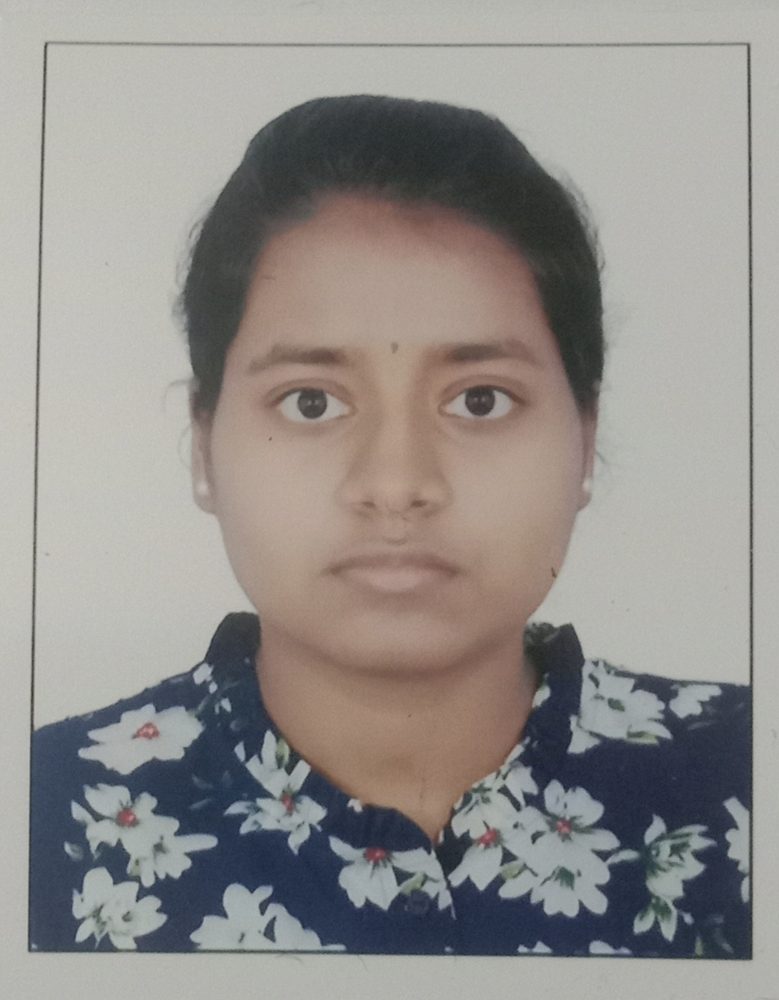

<script>
    document.addEventListener("DOMContentLoaded", function () {
        const toggleButton = document.createElement('button');
        toggleButton.textContent = "Toggle Dark Mode";
        toggleButton.style.position = "fixed";
        toggleButton.style.bottom = "20px";
        toggleButton.style.right = "20px";
        toggleButton.style.padding = "10px 20px";
        toggleButton.style.border = "none";
        toggleButton.style.borderRadius = "5px";
        toggleButton.style.backgroundColor = "#61875f"; // Earthy green
        toggleButton.style.color = "#fff";
        toggleButton.style.cursor = "pointer";
        toggleButton.style.zIndex = "1000";

        document.body.appendChild(toggleButton);

        const toggleDarkMode = () => {
            const isDarkMode = document.body.classList.toggle("dark-mode");

            // Save mode to localStorage
            localStorage.setItem("darkMode", isDarkMode ? "enabled" : "disabled");
        };

        // Apply dark mode from localStorage if previously enabled
        if (localStorage.getItem("darkMode") === "enabled") {
            document.body.classList.add("dark-mode");
        }

        toggleButton.addEventListener("click", toggleDarkMode);
    });
</script>
<!DOCTYPE html>
<html lang="en">
<head>
    <meta charset="UTF-8">
    <metaa name="viewport" content="width=device-width, initial-scale=1.0">
    <title>Resume</title>
    <link rel="stylesheet" href="style.css">
</head>
<body>
    <header>
        <h1>RESUME</h1>
        <nav>
            <a href="index.html">Home</a>
            <a href="biodata.html">Bio-data</a>
        </nav>
    </header>
    <main class="resume-container">
        <div class="header-container">
            <div class="header-left">
                <h1>Sindhu M</h1>
                <p>632, SLN Classic Ladies PG,<br> 1st main, AECS Layout, <br> Bangalore, Karnataka - 560037</p>
                <p>Email: <a href="sim22cs@cmrit.ac.in">sim22cs@cmrit.ac.in</a></p>
                <p>Mobile: +91 8904459438</p>
            </div>
            <div class="header-right">
                
            </div>
        </div>
    
        <section>
            <h2>Career Objective</h2>
            <p>
                Determined and hardworking person looking for a challenging job within a rapidly growing organization where I can implement my technical skills and theoretical knowledge in real-time approaching situations to benefit both my career and the organization.
            </p>
        </section>
        <section>
            <h2>Education Qualification</h2>
            <table>
                <tr>
                    <th>Qualification</th>
                    <th>Institution</th>
                    <th>Year</th>
                    <th>Score</th>
                </tr>
                <tr>
                    <td>Bachelor of Engineering – Computer Science and Engineering</td>
                    <td>CMR Institute of Technology, Bengaluru</td>
                    <td>2026 (Pursuing)</td>
                    <td>8.3 CGPA</td>
                </tr>
                <tr>
                    <td>Pre-University Course – Science</td>
                    <td>Christ Junior College,Dairy Circle</td>
                    <td>2020</td>
                    <td>89.83%</td>
                </tr>
                <tr>
                    <td>10th grade</td>
                    <td>Kaveri Gnana Mithra School</td>
                    <td>2018</td>
                    <td>94.56%</td>
                </tr>
            </table>
        </section>
        <section>
            <h2>Technical Skills</h2>
            <ul>
                <li>Programming Languages: Basic knowledge in C Programming, C++, Python, and Java(basic)</li>
                <li>Database: MySQL (basic)</li>
            </ul>
        </section>
        <section>
            <h4>Certifications:</h4>
            <ul>
                <li>Certified on the topic “C Programming for Beginners” from Udemy.</li>
                <li>Certified in “Introduction to Python Programming and Java Tutorial for Beginners” from Corsera.</li>
            </ul>

        </section>
        

        
        <section>
            <h2>Personal Details</h2>
            <p><strong>Date of Birth:</strong> 10/12/2002</p>
            <p><strong>Gender:</strong> Female</p>
            <p><strong>Nationality:</strong> Indian</p>
            <p><strong>Permanent Address:</strong>Ground floor,Balaji Layout,Near Government School,Marathahalli,Banglore-560037</p>
            <p><strong>Languages Known:</strong> Kannada, Tamil, English</p>
            <p><strong>Hobbies:</strong> Baking</p>
        </section>
        
        
    </main>
    <footer>
        <p>© 2024 Sindhu. All rights reserved.</p>
    </footer>
</body>
</html>
